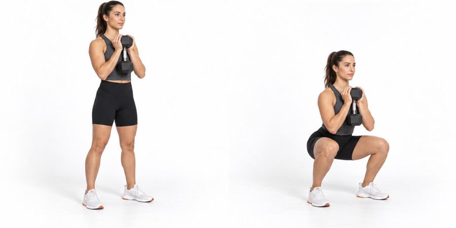

SoftwareLuna / Uygulama rehberi
Antrenör Nova
Ev ve spor salonu için kişisel antrenman programı, adım adım hareket rehberi ve haftalık takip.
Destek al
Ev ve spor salonu için kişisel antrenman programı, adım adım hareket rehberi ve haftalık takip.
Destek al